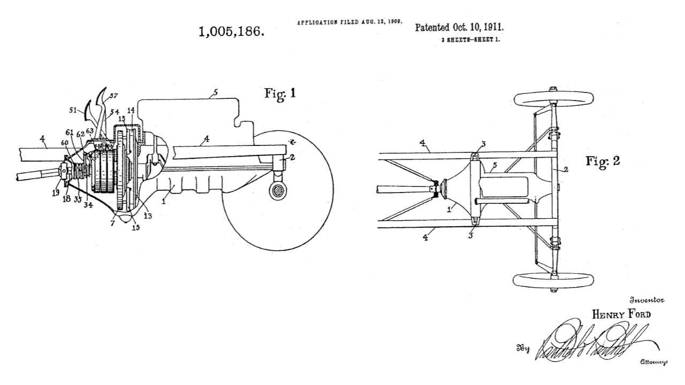
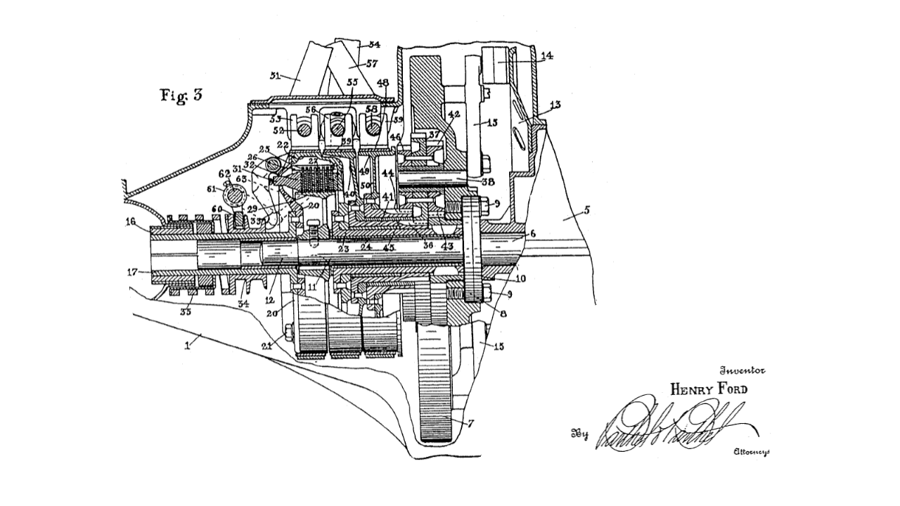

Este artigo mostra como montar no Engrenarium um modelo didático da transmissão do Ford Modelo T e como interpretar seu funcionamento. A montagem usa três conjuntos planetários e muda as restrições para obter primeira marcha, segunda marcha e marcha ré.
Contexto do mecanismo
O Ford Modelo T foi produzido entre 1908 e 1927 e se tornou um dos automóveis mais influentes da história por combinar baixo custo, robustez e facilidade de manutenção. Um dos pontos interessantes para estudo de mecanismos é a sua transmissão, que não segue a forma visual de uma caixa manual moderna com engrenagens deslizantes.
Para o modelo didático, a transmissão é organizada em três relações de operação:
| Condição | Relação indicada |
|---|---|
| Primeira marcha | \(2,75\) |
| Segunda marcha | \(1,0\) |
| Marcha ré | \(-4,0\) |
O sinal negativo da marcha ré representa inversão de sentido da saída em relação à entrada. Já a segunda marcha com relação \(1,0\) representa uma condição direta, em que entrada e saída giram com a mesma velocidade angular.
Dados para montagem no Engrenarium
A descrição do vídeo informa os números de dentes das solares e dos planetas dos três sistemas planetários. Esses valores formam a base da montagem no Engrenarium:
| Conjunto | Solar | Planeta | Anelar interna calculada |
|---|---|---|---|
| Planetária 1 | \(N_{sun}=27\) | \(N_{planet}=27\) | \(N_{ring}=81\) |
| Planetária 2 | \(N_{sun}=21\) | \(N_{planet}=33\) | \(N_{ring}=87\) |
| Planetária 3 | \(N_{sun}=30\) | \(N_{planet}=24\) | \(N_{ring}=78\) |
Os valores da anelar interna acima são obtidos pela condição geométrica de uma planetária simples com mesmo módulo:

Conjunto de transmissão
A transmissão do Modelo T pode ser lida como um conjunto planetário com elementos que assumem funções diferentes conforme a marcha. Em vez de pensar apenas em pares de engrenagens externos, a leitura mais útil é perguntar: qual elemento recebe movimento, qual elemento entrega movimento e qual elemento está travado ou solidário a outro?

Na montagem do Engrenarium, a relação geral é escrita como a razão entre velocidade angular de entrada e velocidade angular de saída:
Essa forma deixa claro que a marcha não é apenas um número: ela é consequência da condição cinemática aplicada aos elementos do trem planetário.
Montagem das marchas
Depois de criar os três conjuntos planetários, mantenha a mesma geometria e salve uma configuração de vínculos para cada marcha. A entrada, a saída e os elementos travados ou acoplados é que definem a relação final.
Primeira marcha
Na primeira marcha, a condição aplicada é o travamento da sun 2:
Quando um elemento do trem é travado, as velocidades relativas internas deixam de ser livres e a saída passa a ocorrer com redução. Com os dentes e vínculos acima, a primeira marcha corresponde à relação \(2,75\), ou seja, a entrada gira mais vezes que a saída para produzir maior capacidade de tração em baixa velocidade.
Segunda marcha
A segunda marcha é uma condição direta. Para isso, aplique a igualdade entre o carrier 1 e a sun 1:
Substituindo essa igualdade na relação geral, obtém-se \(i=1,0\). Isso significa que a velocidade angular de entrada e a velocidade angular de saída são iguais. Em termos de condução, é a marcha de avanço direto.
Marcha ré
Na marcha ré, aplica-se outra condição de travamento:
A relação indicada para a ré é \(-4,0\). O módulo mostra uma redução maior que na segunda marcha, enquanto o sinal negativo indica que a saída gira no sentido oposto ao avanço. Essa é a leitura cinemática essencial: a ré não é apenas uma marcha mais lenta, mas uma condição que inverte o sentido de rotação da saída.
Leitura didática
A transmissão do Ford Modelo T é um bom exemplo para estudar trens planetários porque mostra três comportamentos em um mesmo conjunto: redução para baixa velocidade, marcha direta e inversão de sentido. A diferença entre eles não está em trocar fisicamente todo o conjunto de engrenagens, mas em mudar as restrições aplicadas aos elementos do mecanismo.
Por isso, o roteiro de análise deve seguir esta ordem:
- identificar entrada e saída;
- definir quais elementos planetários estão livres, travados ou acoplados;
- escrever a relação entre velocidades angulares;
- interpretar o sinal da relação para distinguir avanço e ré;
- interpretar o módulo da relação como redução ou marcha direta.
Esse tipo de leitura também ajuda a comparar a transmissão do Modelo T com outros sistemas planetários apresentados no portal, como transmissões CVT didáticas e planetárias compostas montadas no Engrenarium.